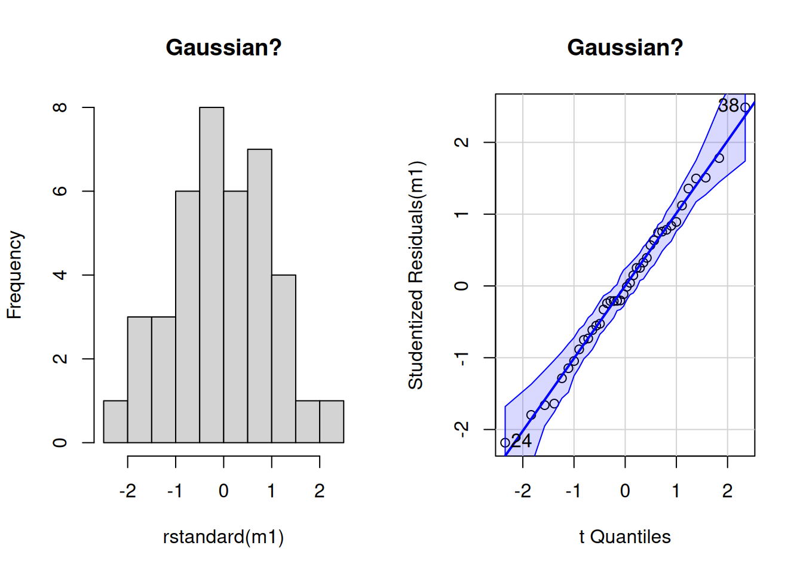
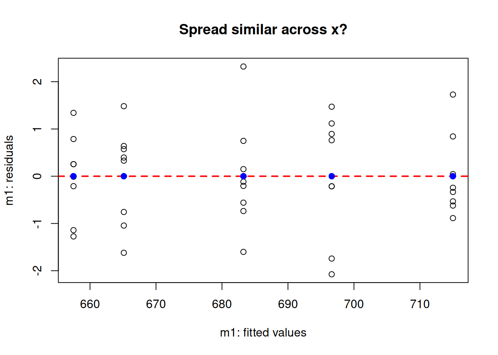

Arrange the arithmetic to compare more than two groups
1 ANalysis Of VAriance (ANOVA)
The analysis of variance is not a mathematical theorem, but rather a convenient method of arranging the arithmetic. R. A. Fisher (via Wishart 1934. Sppl. J. Roy. Soc. 1(1):26-61.)
Perhaps more so than any other tool, the Analysis of Variance (ANOVA) played a role in literally revolutionizing the idea of objectivity in using data to produce evidence to support claims for certain experimental designs. Invented by the famous statistician and biologist R. A. Fisher while he worked at Rothamsted Research, the intention was for ANOVA to be a useful tool to analyze agriculture experiments. Today, despite many innovations and competing approaches, it remains at the foundation of the basic practice of statistics.
1.1 Objectives
The question of 1-way ANOVA
Data and assumptions
Graphing
Test and alternatives
Practice exercises
2 The question of 1-way ANOVA
There are several reasons to use a “1-way ANOVA” experimental design. The scenario usually involves:
one numeric continuous dependent variable of interest
a factor that contains 2 or more levels, often with a control
When there are just two levels, the 1-ANOVA is conceptually equivalent to the t-test
An example might be something like a classic field trial, where crop pest damage is measured (the numeric continuous dependent variable) and the factor compares pest treatment with 3 levels: a control level (no pesticide), an organic pesticide, and a chemical pesticide. The basic question is whether there is an overall difference in the numeric dependent variable amongst the factor levels, however several kinds of questions are also possible to answer:
overall difference test of means between the factors
Comparison of difference of each factor level with the control or other reference factor level
post hoc tests of difference between specific factor levels, e.g. pairwise tests for a factor with levels A, B, and C might test all possible comparisons A:B, A:C, and B:C.
Examination of the “sources of variation” observed in the dependent variable, e.g. what proportion of total variation can be accounted for by the factor
The test statistic for ANOVA is the F ratio, which is proportion of variance in the dependent variable between the groups, relative to that within the categories. We will (very briefly) look at this calculation with the aim of gaining a practical understanding of what is going.
3 Data and assumptions
The data we will look at is an experiment in animal genetics, looking at the weight of male chickens (8-week old weight in grams), where weight is the continuous dependent variable. The factor is the sire identity, where the measure young male chicks were sired by one of 5 sires, thus sire is a factor with 5 levels A, B, C, D, and E.
3.1 Wide format data
Here, the numeric data are stored in five vectors, each corresponding to one factor level. One row does not correspond to a single “case” because each column contains measures from different individual offspring. This is an unusual way to store data like this (these days), but we will look at this “wide format” first.
A B C D E
1 687 618 618 600 717
2 691 680 687 657 658
3 793 592 763 669 674
4 675 683 747 606 611
5 700 631 687 718 678
6 753 691 737 693 788
3.2 Long format data (preferred)
Here, the numeric data is stored in a single vector, with a factor vector for the sire data. Each row corresponds to a single, independent “case”. This format is preferred and adheres to the “Tidy Data” standard, although it is not hard to move between wide and long formats.
A B C D E
1 687 618 618 600 717
2 691 680 687 657 658
3 793 592 763 669 674
4 675 683 747 606 611
5 700 631 687 718 678
6 753 691 737 693 788
# Data in "long format" ##### The hard wayweight <-c(A,B,C,D,E)sire <-c(rep("A", 8),rep("B", 8),rep("C", 8),rep("D", 8),rep("E", 8) )head(data.frame(weight, sire))
weight sire
1 687 A
2 691 A
3 793 A
4 675 A
5 700 A
6 753 A
tail(data.frame(weight, sire))
weight sire
35 674 E
36 611 E
37 678 E
38 788 E
39 650 E
40 690 E
weight1 sire1
1 687 A
2 691 A
3 793 A
4 675 A
5 700 A
6 753 A
tail(data.frame(weight1, sire1))
weight1 sire1
35 674 E
36 611 E
37 678 E
38 788 E
39 650 E
40 690 E
# With function from {tidyr}head(chicken.wide) # From above
A B C D E
1 687 618 618 600 717
2 691 680 687 657 658
3 793 592 763 669 674
4 675 683 747 606 611
5 700 631 687 718 678
6 753 691 737 693 788
library(reshape2) # For melt()#?meltnew.long <-melt(chicken.wide)
No id variables; using all as measure variables
head(new.long) # Not bad but note the variable names...
variable value
1 A 687
2 A 691
3 A 793
4 A 675
5 A 700
6 A 753
names(new.long)
[1] "variable" "value"
# Flash challenge: change the variable names in new.longnames(new.long) <-c('Sire', 'Weight')names(new.long)
[1] "Sire" "Weight"
# NB, you should probably just use long format for your data in the first place!
R output
>head(new.long) # Not bad but note the variable names variable value1 A 6872 A 6913 A 7934 A 6755 A 7006 A 753
##4 Assumptions of ANOVA
The assumptions of ANOVA are similar to those of regression (indeed, both are a specific kind of Linear Model and share the assumptions of the Gaussian Linear Model). The most important to consider now are:
Gaussian residuals (we test graphically and with NHST for Gaussian residual distribution)
Homoscedasticity (we test graphically with a residuals versus fitted values plot)
Equality of variance (plot of residual versus factor and NHST for == variance)
Independent observations (we assume this for now with the chicken data, but will not test is formally)
## **Assumptions** ###### - Gaussian residuals ##### Make the model object with aov()# ?aovm1 <-aov(formula = Weight ~ Sire, data = new.long)# Graph to examine Gaussian assumption of residuals# NB we use rstandard()par(mfrow =c(1,2))hist(rstandard(m1),main ="Gaussian?")# Look at residuals with qqPlot()library(car) # For qqPlot()
Loading required package: carData
qqPlot(x = m1,main ="Gaussian?")

[1] 24 38
par(mfrow=c(1,1))
4.1 Formal test of Gaussian residuals
At a glance, there are no serious issues with the assumption of Gaussian residual distribution. We can use NHST to help us decide; we will try the shapiro.test().
shapiro.test(rstandard(m1))
Shapiro-Wilk normality test
data: rstandard(m1)
W = 0.99182, p-value = 0.9913
There is no evidence of difference to Gaussian in our residuals for our ANOVA model (Shapiro-Wilk: W = 0.99, n = 40, P = 0.99).
4.2 Homoscedasticity check
We will look at the residuals relative to the fitted values.
# Plot for homoscedasticity checkplot(formula =rstandard(m1) ~fitted(m1),ylab ="m1: residuals",xlab ="m1: fitted values",main ="Spread similar across x?")abline(h =0,lty =2, lwd =2, col ="red")# Make the mean residual y points (just to check)y1 <-aggregate(rstandard(m1), by =list(new.long$Sire), FUN = mean)[,2]# Make the x unique fitted values (just to check)x1 <-unique(round(fitted(m1), 6))points(x = x1, y = y1, pch =16, cex =1.2, col ="blue")

4.3 Bartlett test
Finally, we can use NHST just to have a final check of whether the variance in weight is equal between factor levels. There are several ways to do this; we will use the Bartlett test using bartlett.test(), which compares the variance for more than 2 groups.
# NHST to examine assumption of homoscedasticity# (homoscedasticiyy good, heteroscedasticity bad)bartlett.test(formula = weight~sire, data = new.long)
Bartlett test of homogeneity of variances
data: weight by sire
Bartlett's K-squared = 1.6868, df = 4, p-value = 0.7931
We find no evidence that variance in offspring weight differs between sires (Bartlett test: K-sqared = 1.69, df = 4, P = 0.79).
5 Graphing ANOVA
The classic way to visualize the 1-way ANOVA is with boxplot, with some way to show the central tendency of the data separately for each factor level. For continuous variables, boxplots show this perfectly. For count variables, barplots are sometimes used with the height set to the mean, along with some form of error bar. Here we will use a boxplot.
## basic boxplot ##### It always pays to make a nice plot# Do you think sire affects offspring weight?boxplot(Weight ~ Sire, data = new.long, main ="Is this plot good enough?")
So, it looks like sire identity could have an effect on mean male offspring weight. But, is this graph good enough? Can we make it better? Let’s critique it:
(important) The y axis does not indicate the unit of measurement
(important) Neither axis title is capitalized
(optional) Adding on the points might add interesting detail
(optional) Reference line for control (we do not really have a control here) or of the “grand mean” might be useful
5.1 Make a better graph
## **Make a better graph** ####boxplot(Weight ~ Sire, data = new.long,ylab ="Weight (g)",xlab ="Sire",main ="Effect of Sire on 8-wk weight",cex =0) # Get rid of the outlier dot (we will draw it back)# Make horizontal line for grand meanabline(h =mean(new.long$Weight), lty =2, lwd =2, col ="red") # Mere vanity# Draw on raw dataset.seed(42)points(x =jitter(rep(1:5, each =8), amount = .1),y = new.long$Weight,pch =16, cex = .8, col ="blue") # Mere vanity
6 ANOVA F test statistic and alternatives
The basic application of ANOVA in R is the aov() function. There are actually a lot of alternative ways to perform the exact same test in R.
To micro-digress, ANOVA is a subset of the Gaussian linear model; the Gaussian linear model is a subset of the General Linear Model; and the General Linear Model is a subset of the GeneralIZED Linear Model. For now we will forget all of that and go with aov().
6.1 perform the ANOVA**
We have a few things to do here:
Perform 1-way ANOVA and look at the basic output for the overall effect of sire
Look at how to examine contrasts (differences between the control or a reference factor level, and each of the others) and post hoc testing (e.g. all pairwise comparisons between factor levels)
Examine what happens in the ANOVA in a little more detail
6.2 ANOVA basic output
## Perform 1-way ANOVA ##### Try this# NB if the factor is a character, it "should" be coerced to a factor# by R, "the passive aggressive butler"# If in doubt, explicitly make the vector class == factor()m1 <-aov(formula = Weight ~factor(Sire), data = new.long)summary(m1)
Df Sum Sq Mean Sq F value Pr(>F)
factor(Sire) 4 17426 4356 1.872 0.137
Residuals 35 81442 2327
The output is formatted in a classic “ANOVA Table” style. There are 2 rows - one for the “main effect” of the sire factor, one for the residual error. The test statistic is the F value (1.87), the P-value column is named “Pr(>F)” (0.14), and there are 4 degrees of freedom for this test for the factor (the factor degrees of freedom is the number of factor levels minus 1 = 5 factor levels - 1 = 4; the residual degrees of freedom is the total number of observations minus the number of factor levels = 40 - 5 = 35).
Here we can see that the overall effect of sire does not significantly explain variation in weight (1-way ANOVA: F = 1.87, df = 4,35, P = 0.14).
6.3 Contrasts and post hoc test
An alternative to the ANOVA table format, and possibly different to the question of an overall mean effect of the factor, is the approach for a regular linear model looking at differences for each factor level relative to a reference factor level like a control. For our experiment, let’s say that sire C is our reference level sire, against which we would like to statistically compare offspring weight for other sires.
# Use lm() and summary() to generate contrasts# Use relevel() to set sire C to the reference factor level# make Sire C the reference levelnew.long$Sire <-relevel(new.long$Sire, ref="C")# calculate linear modelm2 <-lm(formula = Weight ~ Sire, data = new.long)summary(m2)
Call:
lm(formula = Weight ~ Sire, data = new.long)
Residuals:
Min 1Q Median 3Q Max
-93.625 -29.312 -2.875 33.906 104.750
Coefficients:
Estimate Std. Error t value Pr(>|t|)
(Intercept) 696.63 17.05 40.846 <2e-16 ***
SireA 18.38 24.12 0.762 0.451
SireB -31.50 24.12 -1.306 0.200
SireD -39.13 24.12 -1.622 0.114
SireE -13.38 24.12 -0.555 0.583
---
Signif. codes: 0 '***' 0.001 '**' 0.01 '*' 0.05 '.' 0.1 ' ' 1
Residual standard error: 48.24 on 35 degrees of freedom
Multiple R-squared: 0.1763, Adjusted R-squared: 0.08211
F-statistic: 1.872 on 4 and 35 DF, p-value: 0.1373
plot(Weight ~ Sire, data = new.long)
R output
> m2 <-lm(formula = Weight ~ Sire, +data = new.long)>summary(m2)Call:lm(formula = Weight ~ Sire, data = new.long)Residuals: Min 1Q Median 3Q Max -93.625-29.312-2.87533.906104.750Coefficients: Estimate Std. Error t value Pr(>|t|) (Intercept) 696.6317.0540.846<2e-16***SireA 18.3824.120.7620.451SireB -31.5024.12-1.3060.200SireD -39.1324.12-1.6220.114SireE -13.3824.12-0.5550.583---Signif. codes:0'***'0.001'**'0.01'*'0.05'.'0.1' '1Residual standard error:48.24 on 35 degrees of freedomMultiple R-squared:0.1763, Adjusted R-squared:0.08211F-statistic:1.872 on 4 and 35 DF, p-value:0.1373
Notice how the output format has changed. This is because the summary function (and lots of functions in fact) “behave differently” in response to the specific class() of object we pass to it (here an lm object; before an aov object). One big difference we see is the table of contrasts. Now, there is are 5 rows: one for the intercept coefficient (testing whether the “grand mean” of Weight is different to zero - NB this is not at all interesting for us), and for rows comparing each factor level to the reference mean for sire “C”.
Here, the Estimate column is an estimate of the AMOUNT of difference in weight relative to the reference mean weight for that sire. E.g., sire B offspring weight is estimated at -31.5 grams (the negative indicate less than) compared to offspring weight for sire C. However, this observed sample difference is not statistically significant (P = 0.20).
Notice the overall F value and p-value for the 1-way are also present at the bottom of the output, which is exactly the same as that produced by the aov() function.
We can make a new boxplot based on our new sire variable and notice how it automatically moves sire C to the leftmost “reference position”
plot(Weight ~ Sire, data = new.long,main ="Sire C as reference")
6.4 Post hoc tests
The collection and analysis of data should be driven by the question. We should always be careful to make the distinction between data analysis that SHOULD be done versus that which merely CAN be done. The former is driven by prediction and motivated by evidence, expectation and the design of data collection. The latter is often a waste of time, or worse, a “fishing expedition” in crass pursuit of a P-value, any P-value, which is < 0.05 .
The meaning of significance
Post hoc tests are often interesting in research, and the 1-way ANOVA is a good example, where an overall question of “is there a difference?” can be enhanced by asking whether there are particular or specific differences, say between pairs of means. The phrase post hoc implies that the sometimes these questions can be an afterthought. Thus, consideration should be given as to whether these specific questions NEED to be asked.
6.5 Type I errors
The alpha (\(\alpha\)) value, the value to which we compare our P-value, can be interpreted as the (maximum) probability we are willing to accept of being wrong if we conclude there is significance in our data. Traditionally, this alpha value is accepted to be 0.05, or a 5% chance of making a false positive error. When multiple tests are made on the same data, it increases the chance of discovering a false positive, by chance alone, to above 5%. Thus, there are methods that are used to avoid doing this, by adjusting the P-value to keep the overall likelihood of false positive error at 5%.
The Bonferroni adjustmentsee Bland and Altman 1995 is a baseline, conservative adjustment to the alpha value to avoid false positive errors. This might be typically applied to a 1-way ANOVA situation where specific, pairwise comparisons between means are required that are not covered by the overall test, or by the contrasts. E.g. in our chicken data, we know there is not a difference in offspring weight between sire C and all other sire offsring weights: C:A, C:B, C:D, C:E, but what if we really wanted to test the others? We could use the Bonferroni adjustment as implemented in the pairwise.t.test() function.
The Bonferroni adjustment simply divides the alpha expected value by the number of post hoc pairwise comparisons. NB the Bonferroni adjustment is conservative, and there are alternatives. The point here is just to illustrate how these tests function and, like with many things, more study will be required to round out foundational knowledge for post hoc testing procedures. The Bonferroni test is nice to know about and understand because it is easy to use, and manually calculate, and can be applied to any situation.
# Try this:## Bonferroni ##### ?pairwise.t.test# there are a few p.adjust.methods# c("holm", "hochberg", "hommel", "bonferroni", "BH", "BY",# "fdr", "none")# we will use "bonferroni"pairwise.t.test(x = new.long$Weight, g = new.long$Sire,p.adjust.method ="bonferroni")
Pairwise comparisons using t tests with pooled SD
data: new.long$Weight and new.long$Sire
C A B D
A 1.00 - - -
B 1.00 0.46 - -
D 1.00 0.23 1.00 -
E 1.00 1.00 1.00 1.00
P value adjustment method: bonferroni
NB the output here is a matrix of (Bonferroni adjusted!) p-values for each possible pairwise comparison (none are significant, i.e., less than 0.05). It is also possible to simply calculate uncorrected p-values and compare them to Bonferroni adjust alpha values, as described above!
6.6 Tukey HSD (Honestly Significant Differences)
The Tukey HSD test is ideal for 1-way ANOVA, and is less conservative than the Bonferroni adjustment. We use the Tukey.HSD() function to apply it here.
## Tukey Honestly Significant Differences ##### ?TukeyHSDTukeyHSD(m1) # NB m1 - this function requires an "aov" object
Notice the table of pairwise comparisons. The format is slightly different than that for the simple pairwise.t.test() function output and there is a bit more information. Also note that the p-values tend to be smaller for the exact same comparisons, but there are sill no significant comparisons.
6.7 Alternatives to 1-way ANOVA
In case the assumptions of 1-way ANOVA cannot be met by the data, there are a few options:
Attempt to transform the data (e.g. with log(), sqrt() or other transformation) to “coerce” the data to conform to the assumptions of 1-way ANOVA
Use an alternative test for which assumptions are not violated
The simplest alternative test to use for a 1-way ANOVA design would be a “non-parameteric” test that simply does not make the assumptions of Gaussian residuals or of homscedasticity. NB there are other many other methods as well (e.g. the Generalized linear model, randomization, Bayesian modelling), which we will not cover here.
Non-parametric tests have the advantage of being very easy to use, and being very easy to interpret as they tend to be analogous to tests that require assumptions of the data (so-called “parametric tests” like the t-test, regression and 1-way ANOVA).
A downside to these non-parametric tests is that they tend to have less statistical power. That is, they are less likely than their parametric cousins to detect a significant difference even if one does exist!
6.8 Kruskal-Wallis non-parametric alternative to the 1-way ANOVA
Here we will look at a non-parametric test that is perfect to use instead of, the Kruskal-Wallis test.
Kruskal-Wallis rank sum test
data: Weight by Sire
Kruskal-Wallis chi-squared = 7.648, df = 4, p-value = 0.1054
The result is qualitatively the same as that for our 1-way ANOVA test, which is not surprising. Reporting the results of this test is similar as well.
We found no evidence of a difference in offspring weight for different sires (Kruskal-Wallis: chi-squared = 7.65, df = 4, P = 0.11).
7 ANOVA calculation details
# Our datachicken.wide
7.1 ANOVA Equations
{width = “600px”}
7.2 ANOVA Variables
{width = “400px”}
7.3 ANOVA Sources of variation table
I like the cocksure argument that you never need to actually “do an ANOVA by hand” because we have computers for that sort of thing these days. Which, we do. But, I think I would make a distinction between someone who has never, or fears they cannot, calculate an ANOVA, versus someone who might occasionally do so just to understand better how the world works. I know which one I would rather be.
- Unknown philosopher
7.4 Do an ANOVA “by hand” programmatically
## ANOVA details ##### Try this:# For the code below, try to follow what is going on in the code# It is okay if not every detail is clear yet# Do we get the same answer as aov()?n.groups <-ncol(chicken.wide)n.per.group <-vector(mode ="integer", length =ncol(chicken.wide))for(i in1:ncol(chicken.wide)) {n.per.group[i] <-length(chicken.wide[,i])}n.individuals <-ncol(chicken.wide)*nrow(chicken.wide)df.between <- n.groups -1df.within <- n.individuals - n.groupsmean.total <-mean(as.matrix(chicken.wide))mean.per.group <-colMeans(chicken.wide)ss.between <-sum(n.per.group*(mean.per.group - mean.total)^2)ss.within <-sum(sum((chicken.wide[,1] - mean.per.group[1])^2),sum((chicken.wide[,2] - mean.per.group[2])^2),sum((chicken.wide[,3] - mean.per.group[3])^2),sum((chicken.wide[,4] - mean.per.group[4])^2),sum((chicken.wide[,5] - mean.per.group[5])^2) )ms.between <- ss.between/df.betweenms.within <- ss.within/df.within# Manual F(myF <- ms.between/ms.within)
[1] 1.872189
# Anova tableanova(m1)$"F value"[1] # Store-bought F
[1] 1.872189
8 Practice exercises
For these exercises, run the code below to recreate the data object pest. There are 40 rows and 2 variables with 2 variables: damage and treatment.
Think of this data as the result of an experiment looking at the effectiveness of pesticide treatment on leaf damage. Let us imagine that this experiment measured leaf damage (variable “damage” measured in mm squared) and that the plants were treated with one of 4 treatment levels:
Variable treatment with levels
control
x.half
x.full
organic
The experiment is of course designed to look at an overall effect the various treatments may have to reduce leaf damage relative to the control. In addition, it is of interest to examine the effect of the organic treatment compared to that of the x.half to the x.full.
The experiment ran using 40 potted plants spaced 1m from each other in a greenhouse setting. Each treatment was randomly assigned to 10 plants. Onto each plant was placed 5 red lily beetle (Lilioceris lilii) pairs.
Red lily beetle
8.1
Make a good, appropriate graph representing the overall experiment. Show your code. Describe any trends in the data that are apparent from the graph, as well as an initial assessment of principle assumptions of 1-way ANOVA based only on your single graph.
8.2
Test the assumption of Gaussian residuals for 1-way ANOVA using any graphs or NHST approach that you deem appropriate. Show your code and briefly describe your EDA findings and conclusion as to whether these data adhere to the Gaussian assumption.
8.3
Test the assumption of homoscedasticity of residuals for 1-way ANOVA using any graphs or NHST approach that you deem appropriate. Show your code and briefly describe your EDA findings and conclusion as to whether these data adhere to the homoscedasticity assumption.
8.4
Perform either a 1-way ANOVA or an appropriate alternative based on your findings in the previous answers. Show your code, state your results in the technical style and briefly interpret your findings.
8.5
Perform an appropriate set of post hoc tests to compare pairwise mean differences in these data. Focus on the post hoc questions of interest: Is the organic pesticide effective? Does dose matter in the non-organic treatments?
8.6
Write a plausible practice question involving any aspect of data handling, graphing or analysis for the 1-way ANOVA framework for the iris data (data(iris); help(iris)).